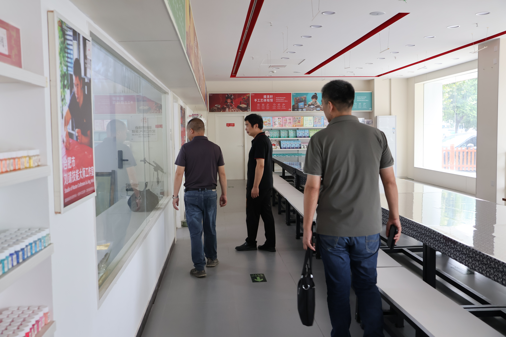
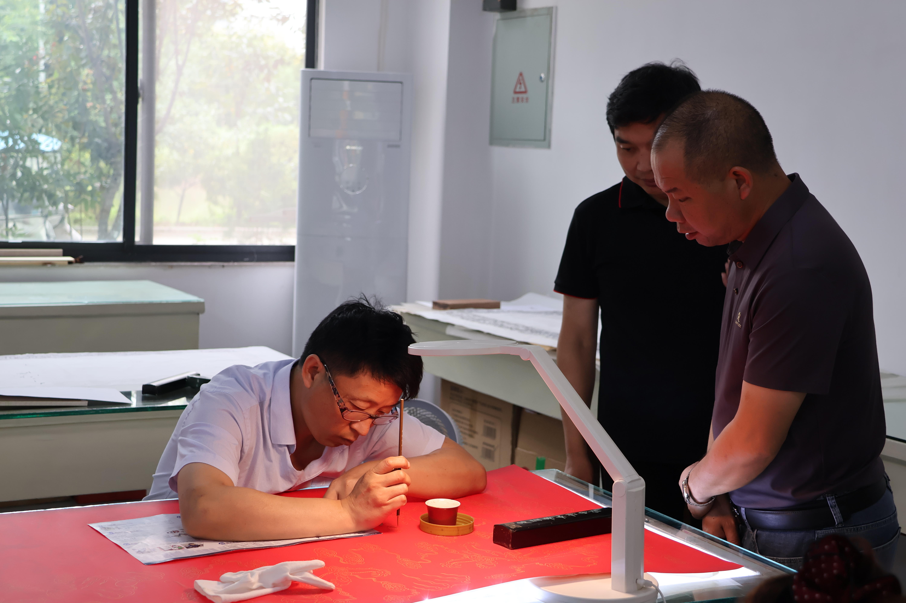
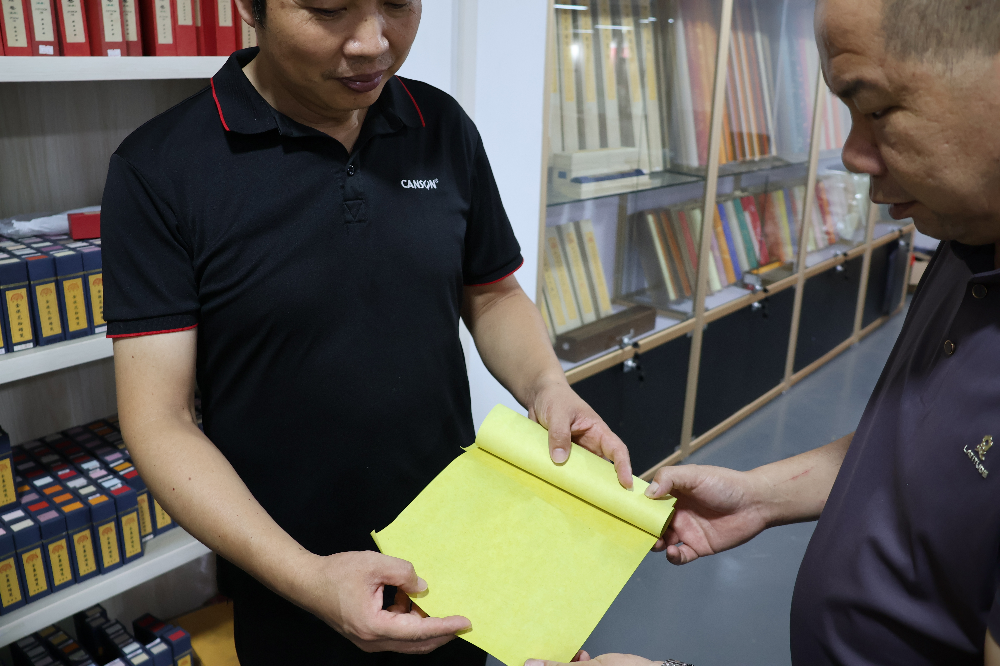
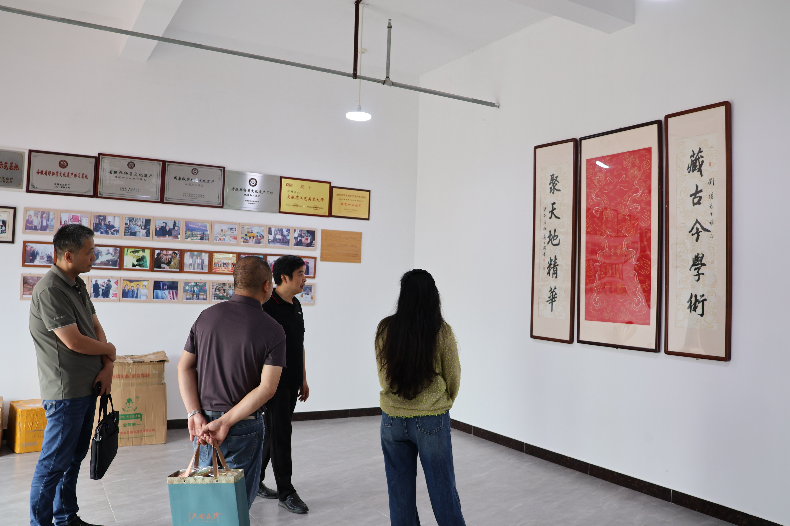

高明与安徽艺术学院设计学院院长撒后余赴掇英轩考察研学基地建设
近日，安徽金流竹艺有限公司负责人高明与安徽艺术学院设计学院院长撒后余一行，共赴安徽省掇英轩书画用品有限公司开展考察交流，重点围绕非遗研学基地建设、传统手工艺教学、体验空间规划以及文创产品开发等方向进行学习与探讨。
考察过程中，一行人实地参观了企业的手工体验空间、产品展示区域及传统文化展示内容，并现场了解相关传统工艺的展示、讲解与体验方式。通过对教学空间布局、体验流程、文化展示及产品陈列等环节的观察，进一步了解传统工艺如何从单一生产制作延伸到研学教育、文化传播和文创消费场景。
对金流竹艺而言，此次考察的重点不仅在于学习成熟研学基地的运营形式，更在于思考竹编如何建立更加完整的体验体系。未来，竹编研学可以从简单的“制作一件作品”，进一步拓展到竹材认知、竹编技艺讲解、现场制作、作品展示以及文创产品延伸等多个环节，让参与者在动手体验的同时，更系统地了解竹文化与传统竹编工艺。
此次交流也为金流竹艺后续推进竹编研学空间建设、课程体系完善和非遗体验项目开发提供了新的参考。公司将继续加强与高校、传统文化企业及相关机构之间的交流合作，积极吸收不同传统工艺在研学教育和文化传播方面的优秀经验，探索具有竹编特色的非遗研学发展路径。
- 学习传统工艺研学空间的规划与展示方式。
- 了解手工体验课程的组织与教学形式。
- 探索“非遗展示＋动手体验＋文创产品”的融合模式。
- 为金流竹艺后续竹编研学基地建设和课程升级积累经验。